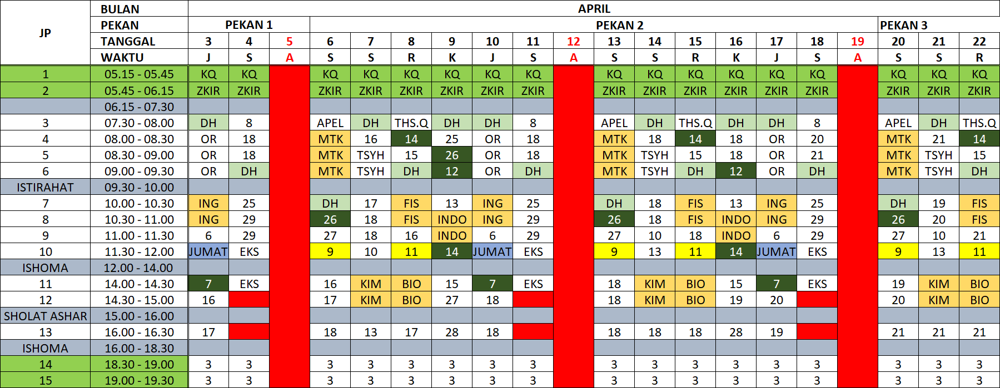
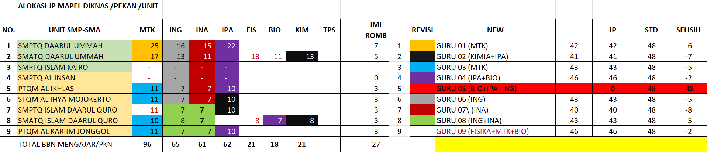

Institutional Academic Scheduler & Optimization Specialist
Hubungi SayaLokasi Sekolah
Jenjang Pendidikan
Level Management
Sebagai seorang Academic Scheduler, saya mengelola detak jantung operasional di 8 unit sekolah (10 jenjang pendidikan) di bawah naungan yayasan. Fokus utama saya adalah mengubah kompleksitas ribuan jam pelajaran dan ratusan tenaga pendidik menjadi sebuah sistem yang harmonis, efisien, dan bebas konflik menggunakan logika data yang presisi.

Implementasi sistem color-coding strategis untuk mempermudah identifikasi penggunaan ruang dan efisiensi waktu guru.

Sinkronisasi jam mengajar guru khusus antar unit, memastikan pemenuhan beban kerja tanpa adanya jadwal tumpang tindih.
Masalah: Tingginya risiko bentrok jadwal pada guru spesialis yang melayani beberapa kelas sekaligus.
Solusi: Membangun sistem deteksi otomatis menggunakan "Conflict Detection Logic" (HLOOKUP & Validation Rules) untuk menjamin distribusi jam yang adil.
Masalah: Yayasan memiliki guru-guru ahli (seperti Cahyadi Juliandra, S.Si. atau Hermawan, S.Pd.) yang tidak hanya mengajar di satu sekolah, tapi tersebar di 4-5 unit sekolah yang berbeda (SMP Boarding School, AL Ihya, SMATQ Nurul Falah, dll)
Solusi: Membangun "Dashboard pemetaan guru lintas unit" guna memastikan agar tidak memiliki jadwal di jam yang sama pada unit yang sama, serta beban kerja sesuai dengan regulasi dan kontrak kerja guru.
Saya siap membantu yayasan atau institusi Anda dalam mengoptimalkan manajemen waktu dan sumber daya.
Email: muazalbaihaqi@proton.me | LinkedIn:muaz al baihaqi
Kirim Email Sekarang